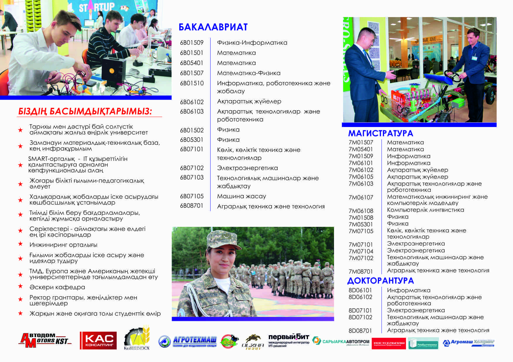
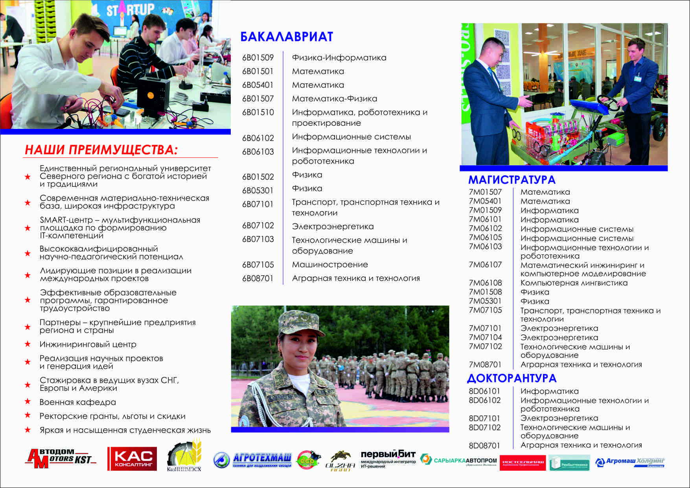
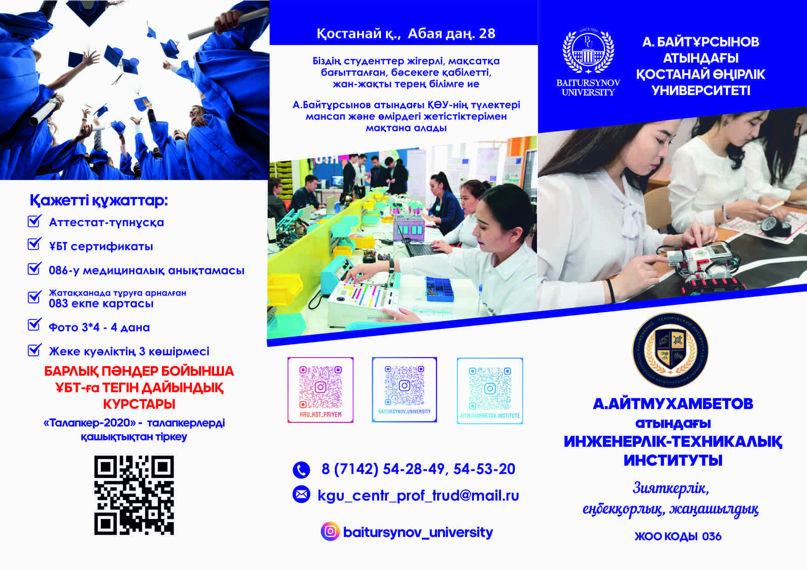
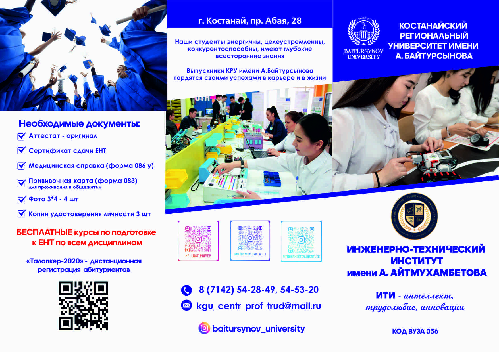

<!--#set var="title" value="Страница без сайдбара" -->
<!--#include virtual="/partials/header.html" -->

<div class="page">
	<div class="content">
		<div class="content-header">
			Об институте
		</div>
		<div class="content-body">
			<div class="swiper-about">
		
				<div class="swiper-wrapper">
					<div class="swiper-slide">
						<div class="swiper-about__image">
							
						</div>
						<div class="swiper-about__title">- Герой Труда Казахстана, советский и казахстанский государственный деятель, первый министр сельского хозяйства Республики Казахстан.- Герой Труда Казахстана, советский и казахстанский государственный деятель, первый министр сельского хозяйства Республики Казахстан.</div>
					</div>
					<div class="swiper-slide">
						<div class="swiper-about__image">
							
						</div>
						<div class="swiper-about__title">Картинка</div>
					</div>
					<div class="swiper-slide">
						<div class="swiper-about__image">
							
						</div>
						<div class="swiper-about__title">Картинка</div>
					</div>
					<div class="swiper-slide">
						<div class="swiper-about__image">
							
						</div>
						<div class="swiper-about__title">Картинка</div>
					</div>
				</div>
		
				<div class="swiper-pagination"></div>
		
				<div class="swiper-navigation">
					<div class="swiper-button-prev"></div>
					<div class="swiper-button-next"></div>
				</div>
		
			</div>
		
			<p><strong>Валентин Иванович Двуреченский</strong>- Герой Труда Казахстана, советский и казахстанский государственный деятель, первый министр сельского хозяйства Республики Казахстан.</p>
			<p>Он родился в селе Большая Алексеевка под Липецком. Там же отучился в Плодоовощном институте имени Мичурина на агронома. Сразу после окончания, в 1962 году его направили в Костанайскую область, где и началась его карьера.</p>
			<p>В нашей области в разное время он занимал разные должности. Сначала он был главным агроном совхозов «Раздольный» Аулиекольского района и «Буревестник» в Наурзуме, который, на тот момент, считался самым крупным в Советском Союзе. После стал директором совхоза «Шевченковский».</p>
			<p><a href="#">Работал начальником областного управлении сельского хозяйства</a>, секретарем Урицкого райкома, обкома и ЦК компартии КазССР. В 1990 году стал первым министром сельского хозяйства Казахстана, а с 1992 года – директор Костанайского НИИ сельского хозяйства.</p>
			<p>Валентин Иванович имеет тесные отношения с нашим ВУЗом. С 2003 года он являлся почетным профессором Костанайского государственного университета им. А. Байтурсынова.</p>
			<p>Двуреченский В.И. - автор более 50 научных статей, им было написано 2 книги и 1 рекомендация. Более того, Валентин Иванович обладатель 4 патентов на изобретения в области сельского хозяйства.</p>
			<p>Награды:</p>
			<ul>
				<li>Герой Труда Казахстана (11.11.2011)</li>
				<li>Орден Ленина (1976),</li>
				<li>Орден Трудового Красного Знамени (трижды),</li>
				<li>Орден «Знак Почёта»,</li>
				<li>Орден «Отан» (1999),</li>
				<li>Орден «Парасат» (2005),</li>
				<li>Медаль «Тыңға 50 жыл»,</li>
				<li>Медаль «40 лет СО Россельхозакадемии 1969—2009» (2010),</li>
				<li>Почётная грамота Президиума Верховного Совета Казахской ССР.</li>
				<li>Заслуженный агроном РК</li>
			</ul>
		</div>
	</div>
</div>

<!--#include virtual="/partials/footer.html" -->